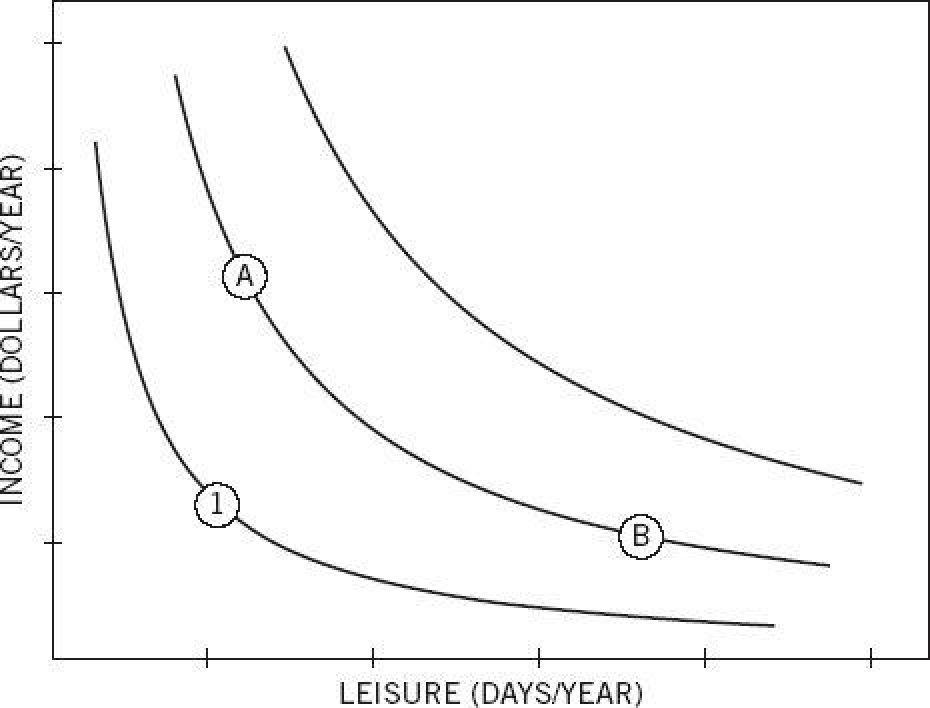

You have probably seen figure 11 or a close cousin of it even if you never had a class in economics. The graph displays an individual’s “indifference map” for two goods.

Figure 11
Students learn in introductory economics classes that each point on the map specifies a particular combination of income and vacation days. Each “indifference curve” connects the combinations of the two goods that are equally desirable—they have the same utility. The curves would turn into parallel straight lines if people were willing to “sell” vacation days for extra income at the same price regardless of how much income and how much vacation time they have. The convex shape indicates diminishing marginal utility: the more leisure you have, the less you care for an extra day of it, and each added day is worth less than the one before. Similarly, the more income you have, the less you care for an extra dollar, and the amount you are willing to give up for an extra day of leisure increases.
All locations on an indifference curve are equally attractive. This is literally what indifference means: you don’t care where you are on an indifference curve. So if A and B are on the same indifference curve for you, you are indifferent between them and will need no incentive to move from one to the other, or back. Some version of this figure has appeared in every economics textbook written in the last hundred years, and many millions of students have stared at it. Few have noticed what is missing. Here again, the power and elegance of a theoretical model have blinded students and scholars to a serious deficiency.
What is missing from the figure is an indication of the individual’s current income and leisure. If you are a salaried employee, the terms of your employment specify a salary and a number of vacation days, which is a point on the map. This is your reference point, your status quo, but the figure does not show it. By failing to display it, the theorists who draw this figure invite you to believe that the reference point does not matter, but by now you know that of course it does. This is Bernoulli’s error all over again. The representation of indifference curves implicitly assumes that your utility at any given moment is determined entirely by your present situation, that the past is irrelevant, and that your evaluation of a possible job does not depend on the terms of your current job. These assumptions are completely unrealistic in this case and in many others.
The omission of the ref Con serence point from the indifference map is a surprising case of theory-induced blindness, because we so often encounter cases in which the reference point obviously matters. In labor negotiations, it is well understood by both sides that the reference point is the existing contract and that the negotiations will focus on mutual demands for concessions relative to that reference point. The role of loss aversion in bargaining is also well understood: making concessions hurts. You have much personal experience of the role of reference point. If you changed jobs or locations, or even considered such a change, you surely remember that the features of the new place were coded as pluses or minuses relative to where you were. You may also have noticed that disadvantages loomed larger than advantages in this evaluation—loss aversion was at work. It is difficult to accept changes for the worse. For example, the minimal wage that unemployed workers would accept for new employment averages 90% of their previous wage, and it drops by less than 10% over a period of one year.
To appreciate the power that the reference point exerts on choices, consider Albert and Ben, “hedonic twins” who have identical tastes and currently hold identical starting jobs, with little income and little leisure time. Their current circumstances correspond to the point marked 1 in figure 11. The firm offers them two improved positions, A and B, and lets them decide who will get a raise of $10,000 (position A) and who will get an extra day of paid vacation each month (position B). As they are both indifferent, they toss a coin. Albert gets the raise, Ben gets the extra leisure. Some time passes as the twins get accustomed to their positions. Now the company suggests they may switch jobs if they wish.
The standard theory represented in the figure assumes that preferences are stable over time. Positions A and B are equally attractive for both twins and they will need little or no incentive to switch. In sharp contrast, prospect theory asserts that both twins will definitely prefer to remain as they are. This preference for the status quo is a consequence of loss aversion.
Let us focus on Albert. He was initially in position 1 on the graph, and from that reference point he found these two alternatives equally attractive:
Go to A: a raise of $10,000
OR
Go to B: 12 extra days of vacation
Taking position A changes Albert’s reference point, and when he considers switching to B, his choice has a new structure:
Stay at A: no gain and no loss
OR
Move to B: 12 extra days of vacation and a $10,000 salary cut
You just had the subjective experience of loss aversion. You could feel it: a salary cut of $10,000 is very bad news. Even if a gain of 12 vacation days was as impressive as a gain of $10,000, the same improvement of leisure is not sufficient to compensate for a loss of $10,000. Albert will stay at A because the disadvantage of moving outweighs the advantage. The same reasoning applies to Ben, who will also want to keep his present job because the loss of now-precious leisure outweighs the benefit of the extra income.
This example highlights two aspects of choice that the st Bon s Ae st Bonandard model of indifference curves does not predict. First, tastes are not fixed; they vary with the reference point. Second, the disadvantages of a change loom larger than its advantages, inducing a bias that favors the status quo. Of course, loss aversion does not imply that you never prefer to change your situation; the benefits of an opportunity may exceed even overweighted losses. Loss aversion implies only that choices are strongly biased in favor of the reference situation (and generally biased to favor small rather than large changes).
Conventional indifference maps and Bernoulli’s representation of outcomes as states of wealth share a mistaken assumption: that your utility for a state of affairs depends only on that state and is not affected by your history. Correcting that mistake has been one of the achievements of behavioral economics.
The Endowment Effect
The question of when an approach or a movement got its start is often difficult to answer, but the origin of what is now known as behavioral economics can be specified precisely. In the early 1970s, Richard Thaler, then a graduate student in the very conservative economics department of the University of Rochester, began having heretical thoughts. Thaler always had a sharp wit and an ironic bent, and as a student he amused himself by collecting observations of behavior that the model of rational economic behavior could not explain. He took special pleasure in evidence of economic irrationality among his professors, and he found one that was particularly striking.
Professor R (now revealed to be Richard Rosett, who went on to become the dean of the University of Chicago Graduate School of Business) was a firm believer in standard economic theory as well as a sophisticated wine lover. Thaler observed that Professor R was very reluctant to sell a bottle from his collection—even at the high price of $100 (in 1975 dollars!). Professor R bought wine at auctions, but would never pay more than $35 for a bottle of that quality. At prices between $35 and $100, he would neither buy nor sell. The large gap is inconsistent with economic theory, in which the professor is expected to have a single value for the bottle. If a particular bottle is worth $50 to him, then he should be willing to sell it for any amount in excess of $50. If he did not own the bottle, he should be willing to pay any amount up to $50 for it. The just-acceptable selling price and the just-acceptable buying price should have been identical, but in fact the minimum price to sell ($100) was much higher than the maximum buying price of $35. Owning the good appeared to increase its value.
Richard Thaler found many examples of what he called the endowment effect, especially for goods that are not regularly traded. You can easily imagine yourself in a similar situation. Suppose you hold a ticket to a sold-out concert by a popular band, which you bought at the regular price of $200. You are an avid fan and would have been willing to pay up to $500 for the ticket. Now you have your ticket and you learn on the Internet that richer or more desperate fans are offering $3,000. Would you sell? If you resemble most of the audience at sold-out events you do not sell. Your lowest selling price is above $3,000 and your maximum buying price is $500. This is an example of an endowment effect, and a believer in standard economic theory would be puzzled by it. Thaler was looking for an account that could explain puzzles of this kind.
Chance intervened when Thaler met one of our former students at a conference and obtained an early draft of prospect theory. He reports that he read the manuscript with considerable Bon s Able Bonexcitement, because he quickly realized that the loss-averse value function of prospect theory could explain the endowment effect and some other puzzles in his collection. The solution was to abandon the standard idea that Professor R had a unique utility for the state of having a particular bottle. Prospect theory suggested that the willingness to buy or sell the bottle depends on the reference point—whether or not the professor owns the bottle now. If he owns it, he considers the pain of giving up the bottle. If he does not own it, he considers the pleasure of getting the bottle. The values were unequal because of loss aversion: giving up a bottle of nice wine is more painful than getting an equally good bottle is pleasurable. Remember the graph of losses and gains in the previous chapter. The slope of the function is steeper in the negative domain; the response to a loss is stronger than the response to a corresponding gain. This was the explanation of the endowment effect that Thaler had been searching for. And the first application of prospect theory to an economic puzzle now appears to have been a significant milestone in the development of behavioral economics.
Thaler arranged to spend a year at Stanford when he knew that Amos and I would be there. During this productive period, we learned much from each other and became friends. Seven years later, he and I had another opportunity to spend a year together and to continue the conversation between psychology and economics. The Russell Sage Foundation, which was for a long time the main sponsor of behavioral economics, gave one of its first grants to Thaler for the purpose of spending a year with me in Vancouver. During that year, we worked closely with a local economist, Jack Knetsch, with whom we shared intense interest in the endowment effect, the rules of economic fairness, and spicy Chinese food.
The starting point for our investigation was that the endowment effect is not universal. If someone asks you to change a $5 bill for five singles, you hand over the five ones without any sense of loss. Nor is there much loss aversion when you shop for shoes. The merchant who gives up the shoes in exchange for money certainly feels no loss. Indeed, the shoes that he hands over have always been, from his point of view, a cumbersome proxy for money that he was hoping to collect from some consumer. Furthermore, you probably do not experience paying the merchant as a loss, because you were effectively holding money as a proxy for the shoes you intended to buy. These cases of routine trading are not essentially different from the exchange of a $5 bill for five singles. There is no loss aversion on either side of routine commercial exchanges.
What distinguishes these market transactions from Professor R’s reluctance to sell his wine, or the reluctance of Super Bowl ticket holders to sell even at a very high price? The distinctive feature is that both the shoes the merchant sells you and the money you spend from your budget for shoes are held “for exchange.” They are intended to be traded for other goods. Other goods, such as wine and Super Bowl tickets, are held “for use,” to be consumed or otherwise enjoyed. Your leisure time and the standard of living that your income supports are also not intended for sale or exchange.
Knetsch, Thaler, and I set out to design an experiment that would highlight the contrast between goods that are held for use and for exchange. We borrowed one aspect of the design of our experiment from Vernon Smith, the founder of experimental economics, with whom I would share a Nobel Prize many years later. In this method, a limited number of tokens are distributed to the participants in a “market.” Any participants who own a token at the end Bon s A end Bon of the experiment can redeem it for cash. The redemption values differ for different individuals, to represent the fact that the goods traded in markets are more valuable to some people than to others. The same token may be worth $10 to you and $20 to me, and an exchange at any price between these values will be advantageous to both of us.
Smith created vivid demonstrations of how well the basic mechanisms of supply and demand work. Individuals would make successive public offers to buy or sell a token, and others would respond publicly to the offer. Everyone watches these exchanges and sees the price at which the tokens change hands. The results are as regular as those of a demonstration in physics. As inevitably as water flows downhill, those who own a token that is of little value to them (because their redemption values are low) end up selling their token at a profit to someone who values it more. When trading ends, the tokens are in the hands of those who can get the most money for them from the experimenter. The magic of the markets has worked! Furthermore, economic theory correctly predicts both the final price at which the market will settle and the number of tokens that will change hands. If half the participants in the market were randomly assigned tokens, the theory predicts that half of the tokens will change hands.
We used a variation on Smith’s method for our experiment. Each session began with several rounds of trades for tokens, which perfectly replicated Smith’s finding. The estimated number of trades was typically very close or identical to the amount predicted by the standard theory. The tokens, of course, had value only because they could be exchanged for the experimenter’s cash; they had no value for use. Then we conducted a similar market for an object that we expected people to value for use: an attractive coffee mug, decorated with the university insignia of wherever we were conducting the experiments. The mug was then worth about $6 (and would be worth about double that amount today). Mugs were distributed randomly to half the participants. The Sellers had their mug in front of them, and the Buyers were invited to look at their neighbor’s mug; all indicated the price at which they would trade. The Buyers had to use their own money to acquire a mug. The results were dramatic: the average selling price was about double the average buying price, and the estimated number of trades was less than half of the number predicted by standard theory. The magic of the market did not work for a good that the owners expected to use.
We conducted a series of experiments using variants of the same procedure, always with the same results. My favorite is one in which we added to the Sellers and Buyers a third group—Choosers. Unlike the Buyers, who had to spend their own money to acquire the good, the Choosers could receive either a mug or a sum of money, and they indicated the amount of money that was as desirable as receiving the good. These were the results:
|
Sellers |
$7.12 |
|
Choosers |
$3.12 |
|
Buyers |
$2.87 |
The gap between Sellers and Choosers is remarkable, because they actually face the same choice! If you are a Seller you can go home with either a m Bon s A a m Bonug or money, and if you are a Chooser you have exactly the same two options. The long-term effects of the decision are identical for the two groups. The only difference is in the emotion of the moment. The high price that Sellers set reflects the reluctance to give up an object that they already own, a reluctance that can be seen in babies who hold on fiercely to a toy and show great agitation when it is taken away. Loss aversion is built into the automatic evaluations of System 1.
Buyers and Choosers set similar cash values, although the Buyers have to pay for the mug, which is free for the Choosers. This is what we would expect if Buyers do not experience spending money on the mug as a loss. Evidence from brain imaging confirms the difference. Selling goods that one would normally use activates regions of the brain that are associated with disgust and pain. Buying also activates these areas, but only when the prices are perceived as too high—when you feel that a seller is taking money that exceeds the exchange value. Brain recordings also indicate that buying at especially low prices is a pleasurable event.
The cash value that the Sellers set on the mug is a bit more than twice as high as the value set by Choosers and Buyers. The ratio is very close to the loss aversion coefficient in risky choice, as we might expect if the same value function for gains and losses of money is applied to both riskless and risky decisions. A ratio of about 2:1 has appeared in studies of diverse economic domains, including the response of households to price changes. As economists would predict, customers tend to increase their purchases of eggs, orange juice, or fish when prices drop and to reduce their purchases when prices rise; however, in contrast to the predictions of economic theory, the effect of price increases (losses relative to the reference price) is about twice as large as the effect of gains.
The mugs experiment has remained the standard demonstration of the endowment effect, along with an even simpler experiment that Jack Knetsch reported at about the same time. Knetsch asked two classes to fill out a questionnaire and rewarded them with a gift that remained in front of them for the duration of the experiment. In one session, the prize was an expensive pen; in another, a bar of Swiss chocolate. At the end of the class, the experimenter showed the alternative gift and allowed everyone to trade his or her gift for another. Only about 10% of the participants opted to exchange their gift. Most of those who had received the pen stayed with the pen, and those who had received the chocolate did not budge either.
Thinking Like a Trader
The fundamental ideas of prospect theory are that reference points exist, and that losses loom larger than corresponding gains. Observations in real markets collected over the years illustrate the power of these concepts. A study of the market for condo apartments in Boston during a downturn yielded particularly clear results. The authors of that study compared the behavior of owners of similar units who had bought their dwellings at different prices. For a rational agent, the buying price is irrelevant history—the current market value is all that matters. Not so for Humans in a down market for housing. Owners who have a high reference point and thus face higher losses set a higher price on their dwelling, spend a longer time trying to sell their home, and eventually receive more money.
The original demonstration of an asymmetry between selling prices and buying prices (or, more convincingly, between selling and choosing) was very important in the initial acceptance of the ideas of reference point and loss aversi Bon s Aersi Bonon. However, it is well understood that reference points are labile, especially in unusual laboratory situations, and that the endowment effect can be eliminated by changing the reference point.
No endowment effect is expected when owners view their goods as carriers of value for future exchanges, a widespread attitude in routine commerce and in financial markets. The experimental economist John List, who has studied trading at baseball card conventions, found that novice traders were reluctant to part with the cards they owned, but that this reluctance eventually disappeared with trading experience. More surprisingly, List found a large effect of trading experience on the endowment effect for new goods.
At a convention, List displayed a notice that invited people to take part in a short survey, for which they would be compensated with a small gift: a coffee mug or a chocolate bar of equal value. The gift s were assigned at random. As the volunteers were about to leave, List said to each of them, “We gave you a mug [or chocolate bar], but you can trade for a chocolate bar [or mug] instead, if you wish.” In an exact replication of Jack Knetsch’s earlier experiment, List found that only 18% of the inexperienced traders were willing to exchange their gift for the other. In sharp contrast, experienced traders showed no trace of an endowment effect: 48% of them traded! At least in a market environment in which trading was the norm, they showed no reluctance to trade.
Jack Knetsch also conducted experiments in which subtle manipulations made the endowment effect disappear. Participants displayed an endowment effect only if they had physical possession of the good for a while before the possibility of trading it was mentioned. Economists of the standard persuasion might be tempted to say that Knetsch had spent too much time with psychologists, because his experimental manipulation showed concern for the variables that social psychologists expect to be important. Indeed, the different methodological concerns of experimental economists and psychologists have been much in evidence in the ongoing debate about the endowment effect.
Veteran traders have apparently learned to ask the correct question, which is “How much do I want to have that mug, compared with other things I could have instead?” This is the question that Econs ask, and with this question there is no endowment effect, because the asymmetry between the pleasure of getting and the pain of giving up is irrelevant.
Recent studies of the psychology of “decision making under poverty” suggest that the poor are another group in which we do not expect to find the endowment effect. Being poor, in prospect theory, is living below one’s reference point. There are goods that the poor need and cannot afford, so they are always “in the losses.” Small amounts of money that they receive are therefore perceived as a reduced loss, not as a gain. The money helps one climb a little toward the reference point, but the poor always remain on the steep limb of the value function.
People who are poor think like traders, but the dynamics are quite different. Unlike traders, the poor are not indifferent to the differences between gaining and giving up. Their problem is that all their choices are between losses. Money that is spent on one good is the loss of another good that could have been purchased instead. For the poor, costs are losses.
We all know people for whom spending is painful, although they are objectively quite well-off. There may also be cultural differences in the attitude toward money, and especially toward the spending of money on whims Bon s Ahims Bon and minor luxuries, such as the purchase of a decorated mug. Such a difference may explain the large discrepancy between the results of the “mugs study” in the United States and in the UK. Buying and selling prices diverge substantially in experiments conducted in samples of students of the United States, but the differences are much smaller among English students. Much remains to be learned about the endowment effect.
Speaking Of The Endowment Effect
“She didn’t care which of the two offices she would get, but a day after the announcement was made, she was no longer willing to trade. Endowment effect!”
“These negotiations are going nowhere because both sides find it difficult to make concessions, even when they can get something in return. Losses loom larger than gains.”
“When they raised their prices, demand dried up.”
“He just hates the idea of selling his house for less money than he paid for it. Loss aversion is at work.”
“He is a miser, and treats any dollar he spends as a loss.”
P